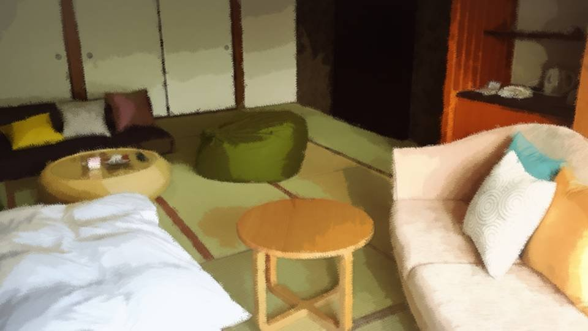
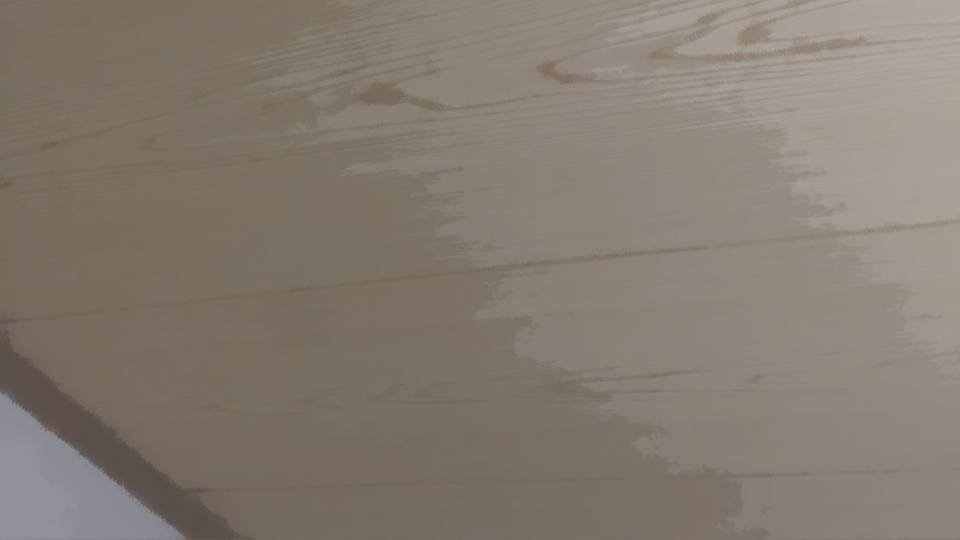
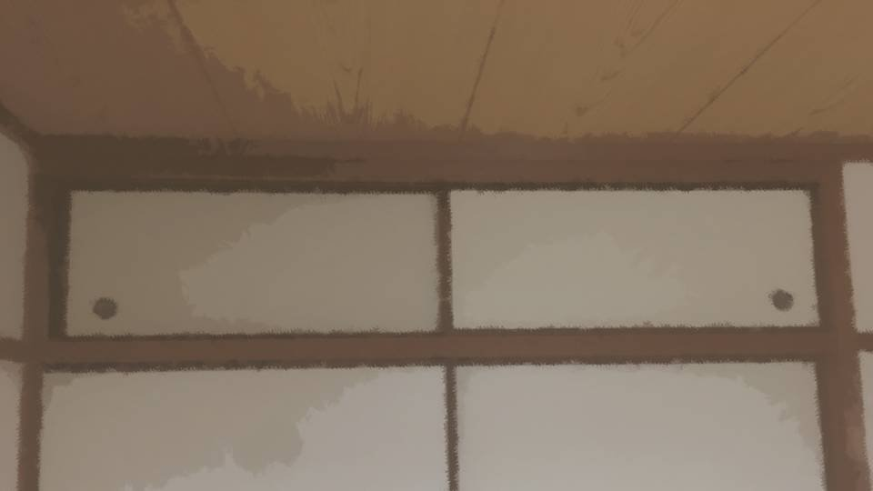
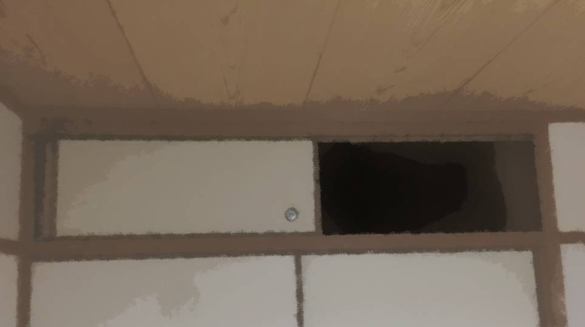

翠眼～3つの真相～

捜索開始15分経過。
2人で調べ切るには、十分な時間だった。
私は夏菜の机を、夏菜は押し入れを調べたのだが……。
2人で調べ切るには、十分な時間だった。
私は夏菜の机を、夏菜は押し入れを調べたのだが……。

「うーん、パパのエロ本もエロDVDすら出てこないね……。
やっぱり時代はネットなのかなあ」
やはりお父さんとおばあちゃんは白なのだろうか。
それは嬉しいことではあるけど、まだ疑いが晴れたわけではない。
この部屋にはないと言うだけで、他にも捜索できる場所はいくらでもある。
やはりお父さんとおばあちゃんは白なのだろうか。
それは嬉しいことではあるけど、まだ疑いが晴れたわけではない。
この部屋にはないと言うだけで、他にも捜索できる場所はいくらでもある。
「お姉ちゃん、お風呂入ったら？
服、蔵の臭いがきついよ？」
「ん……臭うかしら？」
袖を鼻に当ててみる。
かすかにカビのような、ホコリのような臭いを感じる。
目鼻耳が鋭敏な夏菜なら、多少離れていても臭いを感じ取るのだろう。
「ん……臭うかしら？」
袖を鼻に当ててみる。
かすかにカビのような、ホコリのような臭いを感じる。
目鼻耳が鋭敏な夏菜なら、多少離れていても臭いを感じ取るのだろう。
「ん……着替えようかしら。
悪いけど夏菜は、押し入れの片づけをしてくれる？」
「えー？ めんどくさいよ……」
「ん……押し入れを調べたのは夏菜でしょ？ 全部元の位置に戻さないと。お願いね」
「はあい……」
「えー？ めんどくさいよ……」
「ん……押し入れを調べたのは夏菜でしょ？ 全部元の位置に戻さないと。お願いね」
「はあい……」

ここは、私が荒田に住んでいた頃に使っていた部屋だ。
今でも私の部屋として残してもらっているが、そのうち夏菜がこの部屋を使うことになるだろう。
今でも私の部屋として残してもらっているが、そのうち夏菜がこの部屋を使うことになるだろう。
適当な服を段ボールから引っ張り出す。
お風呂入りたいけど、また汚れる可能性もあるから、それは後回しだ。
あれ？ そうなると……着替えても意味ないかしら？
蔵に戻ったら、着替えた服にも臭いがつくだろう。
お風呂入りたいけど、また汚れる可能性もあるから、それは後回しだ。
あれ？ そうなると……着替えても意味ないかしら？
蔵に戻ったら、着替えた服にも臭いがつくだろう。
引っ張り出した服を箱の中に戻す。
不潔なのは好きじゃないけど、今私がしていることを考えれば、多少は我慢しなくてはならない。
さすがに今夜の夕飯は家で食べろと言われるだろうから、その時にお風呂と着替えを済まそう。
みんなの前で汚い格好で食事したくないし。
不潔なのは好きじゃないけど、今私がしていることを考えれば、多少は我慢しなくてはならない。
さすがに今夜の夕飯は家で食べろと言われるだろうから、その時にお風呂と着替えを済まそう。
みんなの前で汚い格好で食事したくないし。
部屋に戻ると、夏菜がきょろきょろと辺りを見回している。
押し入れから出した荷物はまだ片づけられていない。
「ん……夏菜、荷物は――」
押し入れから出した荷物はまだ片づけられていない。
「ん……夏菜、荷物は――」

「しっ！ 静かに！」

私の言葉をさえぎるように短い返事をし、じっと天井を睨む夏菜。
まるで空中の蚊を追いかけるように、私には見えないものを目で追っているようにも見える。
まるで空中の蚊を追いかけるように、私には見えないものを目で追っているようにも見える。
「お姉ちゃん……
やっぱり臭う……」
「ん……まだ着替えてないの、また服が汚れるかもしれないし……」
「ん……まだ着替えてないの、また服が汚れるかもしれないし……」
「違うの！ お姉ちゃんが部屋を出た後もずっと蔵の臭いがするの！」
「え？」
「この部屋にあるよ、お姉ちゃんが探しているものが」
まさか夏菜、本の臭いを探り当てたの？
「え？」
「この部屋にあるよ、お姉ちゃんが探しているものが」
まさか夏菜、本の臭いを探り当てたの？
「昨日から変だったんだよ、この部屋、ちょっとカビ臭かった。
十三回忌の準備でパパがあちこち行ったせいかと思ったけど、この臭いはあの蔵の臭いと同じだ」
夏菜はなおも天井を凝視する。
「ん……天井裏……？」
「多分……」
「ん……夏菜、私の肩に乗って」
「ん……天井裏……？」
「多分……」
「ん……夏菜、私の肩に乗って」

夏菜を肩車し、天井を探らせる。
夏菜は鼻をクンクンさせ、天井をコンコンとたたく。
見た目は何の変哲もない天板だが……。
夏菜は鼻をクンクンさせ、天井をコンコンとたたく。
見た目は何の変哲もない天板だが……。
「ん！
ここだけ音が変だ。ほら、この上に何かあるよ」
夏菜が叩いたところだけ、少し音が重い。
夏菜が叩いたところだけ、少し音が重い。
「ん……板に切れ目はない？ 開けられないかしら？」
「むむ……全然切れ目ないね。多分開けられないよ」
「ん……じゃあ、どこか別の場所から天井裏に入れるのかしら？」
「屋根に秘密の窓でもあるのかな？」
「むむ……全然切れ目ないね。多分開けられないよ」
「ん……じゃあ、どこか別の場所から天井裏に入れるのかしら？」
「屋根に秘密の窓でもあるのかな？」
「ん……お父さんの体型じゃ2階の屋根に登るのは無理ね。
2階の部屋のどこかに、この天井裏に通じる空間があるはずよ」

「オッケー！ いよいよ本格的な捜査になって来ましたなあ！」
夏菜は喜んでいるが、その捜査対象が自分の父親であることを忘れていないだろうか……。
夏菜は喜んでいるが、その捜査対象が自分の父親であることを忘れていないだろうか……。
「ん……夏菜はここと客間を調べて。私は廊下と他の部屋を調べる」
「はいはーい！」
「の、前に、押し入れ片付けてね」
「はいはーい！」
「の、前に、押し入れ片付けてね」
「ちぇ……」

まずは2階の廊下だ。
ここはみんながしょっちゅう通るから、大きな異変があれば気がつくはず。
なのだが……。
天井は古く黒ずんでおり、もし切れ目を入れようものなら、傷が目立つだろう。
ホウキでつついてみても、簡単に外れるような板ではない。
ここはみんながしょっちゅう通るから、大きな異変があれば気がつくはず。
なのだが……。
天井は古く黒ずんでおり、もし切れ目を入れようものなら、傷が目立つだろう。
ホウキでつついてみても、簡単に外れるような板ではない。
次の部屋に行ってみよう。

ここは普段、空き部屋になっている。
お母さんが昔、予知をする際に使っていたところで、狭い三畳間だ。
この部屋に入るの、何年振りだろうか。
お母さんが昔、予知をする際に使っていたところで、狭い三畳間だ。
この部屋に入るの、何年振りだろうか。

狭い部屋に備え付けられた押し入れ――。
開けてみるが、何も入っていない。
その上には天 袋がある。
ここも空のはずだが……。
開けてみるが、何も入っていない。
その上には天 袋がある。
ここも空のはずだが……。

開けた瞬間、ほんのわずかだけ風を感じた。
この密閉された部屋に、同じく密閉されたはずの天袋から風……。
まさか、この奥に……！？
私の身長では天袋の奥まで見通すことはできない。
この密閉された部屋に、同じく密閉されたはずの天袋から風……。
まさか、この奥に……！？
私の身長では天袋の奥まで見通すことはできない。
「ん……夏菜、ちょっと来て！」
「まだ片づけ終わってないよー！」
「ん……それは後でいいから！」
「もう、人使い荒いなあ……」
「まだ片づけ終わってないよー！」
「ん……それは後でいいから！」
「もう、人使い荒いなあ……」
「はいはい、なんでっしゃろ？」
「ん……このスマホで天袋の奥を照らしてちょうだい。ここから風が吹いてきたの」
「………… うん……臭うね……」
「ん……このスマホで天袋の奥を照らしてちょうだい。ここから風が吹いてきたの」
「………… うん……臭うね……」
夏菜は私のスマホを受け取ると、肩車もなしに天袋へ入っていった。
「ん……どう？ 天井裏に行けそう？」
「無理無理！ ここも完璧に1枚の板だよ！ でもここの板、かなり新しいよ！？ 張り替えたのかな？」
「ん……どう？ 天井裏に行けそう？」
「無理無理！ ここも完璧に1枚の板だよ！ でもここの板、かなり新しいよ！？ 張り替えたのかな？」
「ん……壊せる？」
「壊していいの？」
「ん……いいわ、私が責任取るから」
「分かったよ！」
「壊していいの？」
「ん……いいわ、私が責任取るから」
「分かったよ！」
天袋から天井を激しく殴る音が響き渡る。
夏菜のこぶしなら、数発で破れるだろう。
夏菜のこぶしなら、数発で破れるだろう。
と、再び風が部屋に吹き込んできた。
さっきの風よりも強い。
さっきの風よりも強い。
「うわ！ くっさいなあ！
ちょっと行ってくるね！」
どうやら穴が開いたようだ。
夏菜が小柄で運動神経が良くて本当に助かった。
私の体重で天井裏に入ったら、さすがに天井の板は壊れてしまうだろう。
今のうちに私がお父さんの部屋の片づけをしておこう。
どうやら穴が開いたようだ。
夏菜が小柄で運動神経が良くて本当に助かった。
私の体重で天井裏に入ったら、さすがに天井の板は壊れてしまうだろう。
今のうちに私がお父さんの部屋の片づけをしておこう。
なるべく元の位置に全てを戻すように心がけるが、出したのは夏菜だからどうしても適当にせざるを得ない。
でも考えてみれば、こそこそとする必要もなかったかもしれない。
お父さんが白なら説明すれば済む話だし、黒なら速やかに問い詰めるだけだ。
でも考えてみれば、こそこそとする必要もなかったかもしれない。
お父さんが白なら説明すれば済む話だし、黒なら速やかに問い詰めるだけだ。
「お姉ちゃん、いる？」
天井裏から夏菜の声だ。
先ほど夏菜が怪しいと言っていた箇所をたたいてみる。
先ほど夏菜が怪しいと言っていた箇所をたたいてみる。
「ん……夏菜、ここがさっき音が重いって言ってた場所よ」
「ちょっと待ってね…… えっと……」
さあ…… お父さんは黒なのか…… それとも白なのか……。
「ちょっと待ってね…… えっと……」
さあ…… お父さんは黒なのか…… それとも白なのか……。
「お姉ちゃん……
あったよ。
蔵の臭いがする本、何冊か置いてある」
「ん……分かった、持って戻ってきて」
お父さんは、あるいはおばあちゃんは、
「ん……分かった、持って戻ってきて」
お父さんは、あるいはおばあちゃんは、
やはり黒のようだ。

「やっぱり、ここで読むんだね」
「ん……家だとお父さんたちが帰ってきたときに、隠すの面倒だしね。 夏菜も読むの？」
「そりゃ気になるよ！ 教えてくれるよね！？」
「ん……構わないけど、きっと難しい話よ？ 私にも理解できるかどうか……」
「ぬう……お姉ちゃんでも難しいなら、私にも難しいよね……」
「ん……家だとお父さんたちが帰ってきたときに、隠すの面倒だしね。 夏菜も読むの？」
「そりゃ気になるよ！ 教えてくれるよね！？」
「ん……構わないけど、きっと難しい話よ？ 私にも理解できるかどうか……」
「ぬう……お姉ちゃんでも難しいなら、私にも難しいよね……」
「ん……だったら、夏菜は家に戻ってて。2人とも蔵にこもってたら変に思われるわ」
「そうするよ……後でちゃんと教えてね？」
「そうするよ……後でちゃんと教えてね？」
しぶしぶではあるが、納得したようだ。
夏菜に内容を知られるのは構わないけど、いちいち解説していると時間がなくなってしまう。
夏菜に内容を知られるのは構わないけど、いちいち解説していると時間がなくなってしまう。

さて、ここには3冊の本がある。
屋根裏に隠されていた本――見た目も臭いも、確かに蔵の地下にあったものと同じようだ。
しかしこれらだけが、意図的に屋根裏に隠されていたのだ。
お父さんが隠したのか、おばあちゃんが隠したのか、はたまた2人で隠したのかは定かではない。
屋根裏に隠されていた本――見た目も臭いも、確かに蔵の地下にあったものと同じようだ。
しかしこれらだけが、意図的に屋根裏に隠されていたのだ。
お父さんが隠したのか、おばあちゃんが隠したのか、はたまた2人で隠したのかは定かではない。
1冊目――
タイトルは『死月妖花の生態』。
何かしらこれ…… しがつようかって読むのかしら？
何かしらこれ…… しがつようかって読むのかしら？
2冊目――
『猛き音と翠眼呪殺』、これは古い文献のようだ。
翠眼呪殺は分かるが猛き音とは何だろうか……。
翠眼呪殺は分かるが猛き音とは何だろうか……。
3冊目――
『失踪者共のなれの果て』、これは古語のようにも見えるが、現代語にも近い。
よし、2冊目の『猛き音と翠眼呪殺』の分は五島ちゃんに送って翻訳してもらおう。
ページ数もさほどないし、撮って送る手間も少ない。
写真を撮りながら、私が読むべき本を選ぶ。
『死月妖花の生態』か『失踪者共のなれの果て』か。
ページ数もさほどないし、撮って送る手間も少ない。
写真を撮りながら、私が読むべき本を選ぶ。
『死月妖花の生態』か『失踪者共のなれの果て』か。
前者は70年ほど前、後者は130年ほど前。
後者が先に書かれたもののようだし、こちらから読んでみようか。
この時代の古語はさほど難しいものでもない。
後者が先に書かれたもののようだし、こちらから読んでみようか。
この時代の古語はさほど難しいものでもない。
失踪者共のなれの果て――
祀耀668年、132年前に発生した荒田集落の集団失踪事件を、残った住人たちが調査をしたようだ。
それによると……。
それによると……。

『祀耀669年、集団失踪が起きた次の年の春、荒田集落周辺に、見覚えのない桜の木が数十本増えていることに気がついた。
去年までは木の影も形もないような場所に、突然現れたのだ。
さも、毎年満開の花をつけていたかのように、大きな桜の木が誇らしげに桜の花を見せつけていた』
『突然現れた桜の木の数はおよそ30本。
奇しくも、去年失踪した住人の数とほぼ同じである』
『我々は調査のため、新しく生えた木の1本を根から掘り起こした。
その際、根に絡まるように衣服と骸骨が現れた。
やっぱりそうだ、この桜の木は、住人を苗床にして突然育ったのだ。
この木は桜の木なんかではない。桜にそっくりな別の何かだ』
『古来、この突然現れた桜の木らしきものを、『死月妖花』と呼んでいたそうだ。
怪しげな花が、死の月に咲くのだ。
荒田集落の者は、事故や病気でない限り、ほぼ間違いなく四月に死亡する。
だから、死月だ』
これはつまり、荒田集落の住人は失踪すると桜の木になってしまう？
しかも、突然桜の木が生え、満開の花を咲かせるほどに大きいものに変わる。
これをさっき読んだ実験レポートと組み合わせると……。
しかも、突然桜の木が生え、満開の花を咲かせるほどに大きいものに変わる。
これをさっき読んだ実験レポートと組み合わせると……。
突然現れた桜の木は樹木ではなく、キノコである。
そして人間の体内に胞子が入り込み、感染を拡げつつ性質を変えていく。
胞子というのは種のようなものだから、ある世代になると人間を苗床にして桜が咲く、ってことかしら。
なるほど、つじつまは合う。
そして人間の体内に胞子が入り込み、感染を拡げつつ性質を変えていく。
胞子というのは種のようなものだから、ある世代になると人間を苗床にして桜が咲く、ってことかしら。
なるほど、つじつまは合う。
それに、住民帳にもあったように、荒田集落の人間は確かにみんな四月に死亡する。
それどころか、この10年間の呪殺事件が起こる前は、四月の死亡例を守ろうとするがごとく、老人は四月に自殺していたのだ。
この時代から四月に死ぬというおかしな風土病があったわけか。
それどころか、この10年間の呪殺事件が起こる前は、四月の死亡例を守ろうとするがごとく、老人は四月に自殺していたのだ。
この時代から四月に死ぬというおかしな風土病があったわけか。
『失踪者共のなれの果て』にはまだ続きがある。
『そうだ、このようにして考えれば、この荒田集落にまつわる不可思議な現象をほぼ解決できるのではないだろうか。
これまで、この不可解な現象は呪いだの妖怪だので済まされてきたが、今や日本全体も西洋化が進むと見込まれる時代だ。
そろそろこの神話主義から脱却し、現実的に荒田集落の謎を解き明かさなくてはならない』
『その一環として、この荒田集落から代表者を東京市に向かわせる。
ドローガを持たせ、政権を握る者に献上させる。
しかるべき人物に出会うことができれば、潤沢な資金と設備で研究できるだろうが、ドローガの謎が解かれるのはいつになるのか――
例え100年かかるとしても、世代を越えて解き明かすべきだろう』
ここから推測できるのは、荒田の住人達は、何らかの方法で時の権力者に接近したということだ。
この時代から約60年後に、荒田の桜がどこぞの研究団体に持って行かれた。
60年もかかって、ようやく本格的な研究が開始されたということか。
この時代から約60年後に、荒田の桜がどこぞの研究団体に持って行かれた。
60年もかかって、ようやく本格的な研究が開始されたということか。
これによりある程度科学が発達した時代でドローガの科学的な分析が行われた。
推測ではあるけど一応話がつながってくる。
推測ではあるけど一応話がつながってくる。

――五島ちゃんからのメール――さっき送った『猛き音と翠眼呪殺』の翻訳だ。
さすが五島ちゃん、仕事が早い。
さすが五島ちゃん、仕事が早い。
「ん……？」
翻訳の前に、五島ちゃんからのコメントがある。
五島ちゃんの翻訳メールには、ほとんど主観の入らないコメントが添えられるのが普通なのだが、今回は五島ちゃんの意見も混じっているようだ。
翻訳の前に、五島ちゃんからのコメントがある。
五島ちゃんの翻訳メールには、ほとんど主観の入らないコメントが添えられるのが普通なのだが、今回は五島ちゃんの意見も混じっているようだ。
『チガ姉はアポカリプティックサウンドって知ってますか？
おそらく、この本に書かれているのはそれについてです。
動画のリンクを送るので見てみてください』
このような五島ちゃんの文と動画サイトのURLが貼られている。
まず、動画を見てみよう。
このような五島ちゃんの文と動画サイトのURLが貼られている。
まず、動画を見てみよう。
普通の夜の風景が映され、そこに何やら大きな音が鳴り響くだけの動画。
工場の中で大きな機械が動いているような、巨大な古い鉄の扉が動いているような。
何とも形容しがたい音ではあったが、少なくとも心地よさは感じない。
もしこれが無編集の動画だとしたら、かなり奇妙な音と言えるだろう。
工場の中で大きな機械が動いているような、巨大な古い鉄の扉が動いているような。
何とも形容しがたい音ではあったが、少なくとも心地よさは感じない。
もしこれが無編集の動画だとしたら、かなり奇妙な音と言えるだろう。
五島ちゃんがわざわざこれを送ったということは、『猛き音と翠眼呪殺』の『猛き音』がこれに該当すると言いたいのだろう。
アポカリプティックサウンド――ちょっとこれでネット検索してみよう。
アポカリプティックサウンド――ちょっとこれでネット検索してみよう。
――約10万件がヒット。
知っている人は知っている、くらいの知名度かな。
それでもまとめサイトや考察サイトがあるくらいだから、ある程度客観的な情報を得られるだろう。
知っている人は知っている、くらいの知名度かな。
それでもまとめサイトや考察サイトがあるくらいだから、ある程度客観的な情報を得られるだろう。
 video: 悪天候.wmv
video: 悪天候.wmv近年世界中で観測されている、サイレンや金属がこすれるような怪音現象。
その原因は不明であるが、人々の不安をかきたてるような何とも不快な音で話題となった。
その音はアポカリプティックサウンドと言われる。
何でも、世界の破滅を知らせる音だそうだ。
その原因は不明であるが、人々の不安をかきたてるような何とも不快な音で話題となった。
その音はアポカリプティックサウンドと言われる。
何でも、世界の破滅を知らせる音だそうだ。
video: 悪天候.wmvくだらない……オカルトゴシップ記事のような解釈だ。
いや……そのような考え方は危険だと五島ちゃんから忠告されたのだ。
くだらないと思っても、無視していい情報ではない。
いよいよ宗教じみた話になってきた。
宗教といえば……。
いや……そのような考え方は危険だと五島ちゃんから忠告されたのだ。
くだらないと思っても、無視していい情報ではない。
いよいよ宗教じみた話になってきた。
宗教といえば……。
video: 悪天候.wmvこの荒田集落の祖先には西洋人がいて、独自の信仰があったとか。
その名残が今でも残っていて、その教典がどの家にも1つはある。
確か、ここの地下にもあったっけ。
ヒントがあるかもしれないし、持ってきてみよう。
その名残が今でも残っていて、その教典がどの家にも1つはある。
確か、ここの地下にもあったっけ。
ヒントがあるかもしれないし、持ってきてみよう。
Read ✓ Next in this arc →